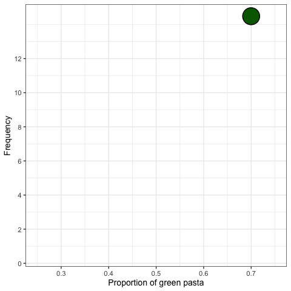
Sampling
샘플링을 직접 경험하며 샘플링, 샘플링 변동성, 샘플링 분포 개념을 익히기.
샘플링 용어:
불편추정량 (Unbiased Estimator)의 정의.
통계적 추론의 핵심 정리: 중심극한정리 (Central Limit Theorem, CLT).
파스타 20개를 표본으로 선택함.
무작위(random) 로 선택되었음.
결과는 다음과 같음.
| 색상 | 개수 | 비율 |
|---|---|---|
| 초록색 | 14 | 0.70 |
| 빨간색 | 5 | 0.25 |
| 노란색 | 1 | 0.05 |
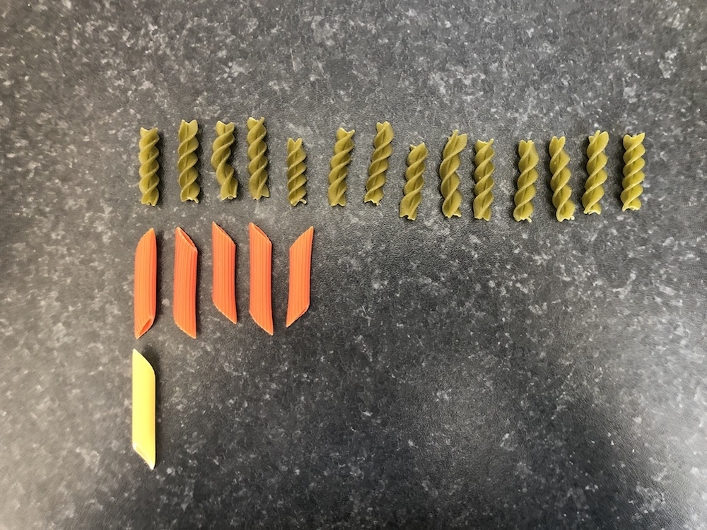
만약 새로운 표본을 추출한다면 (이전에 뽑은 20개의 파스타를 다시 그릇에 넣고)? 이전처럼 녹색 파스타 14개가 나올까?
이 활동을 여러 번 반복하면 어떻게 될까?
아마 아닐 것임. 표본은 추출할 때마다 달라질 것임.
핵심 포인트: 표본은 무작위로 추출됨.
수업 중에는 실제 파스타를 준비할 수 없어서, 집에서 20개의 파스타를 복원 추출하여 18개의 표본을 뽑았음.
각각의 표본은 다음과 같음:
| 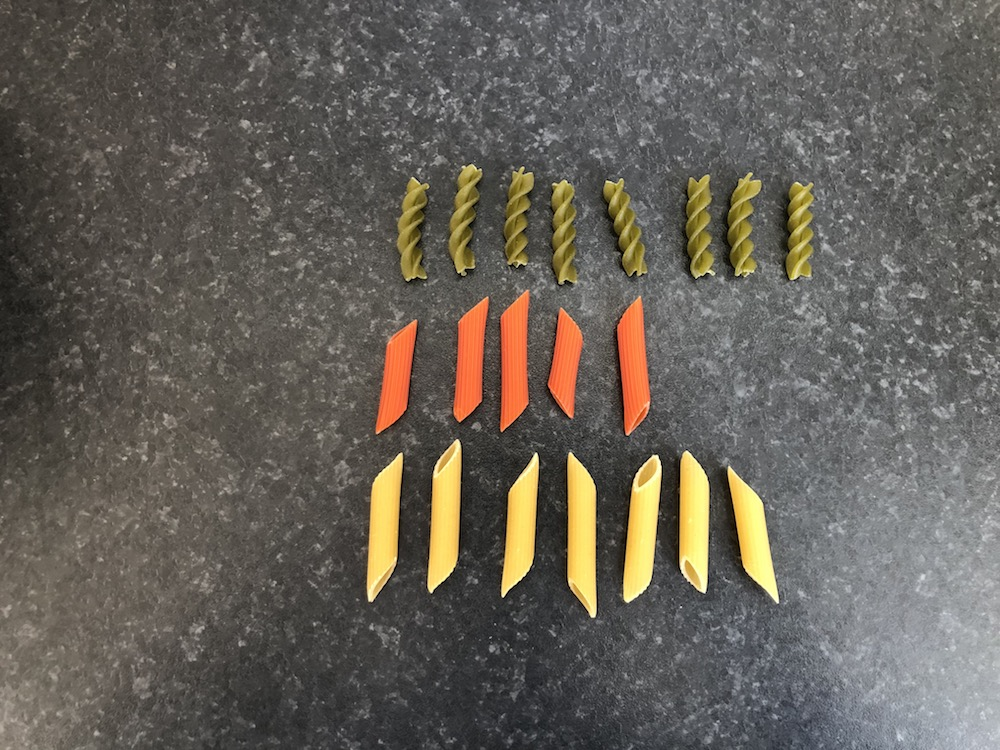 | 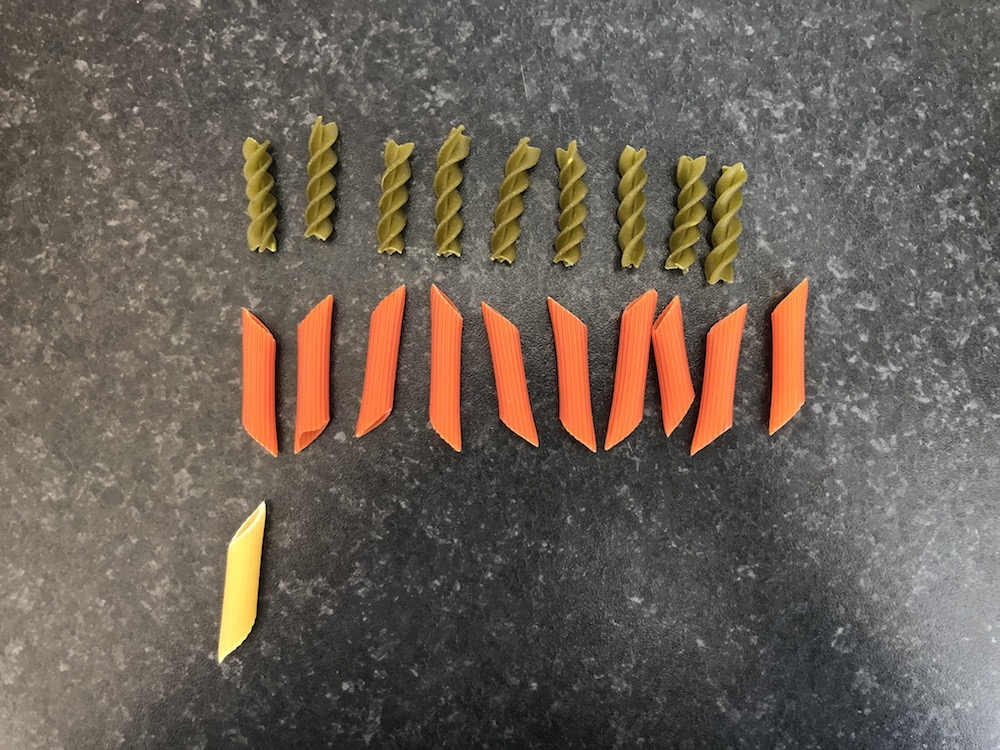 | 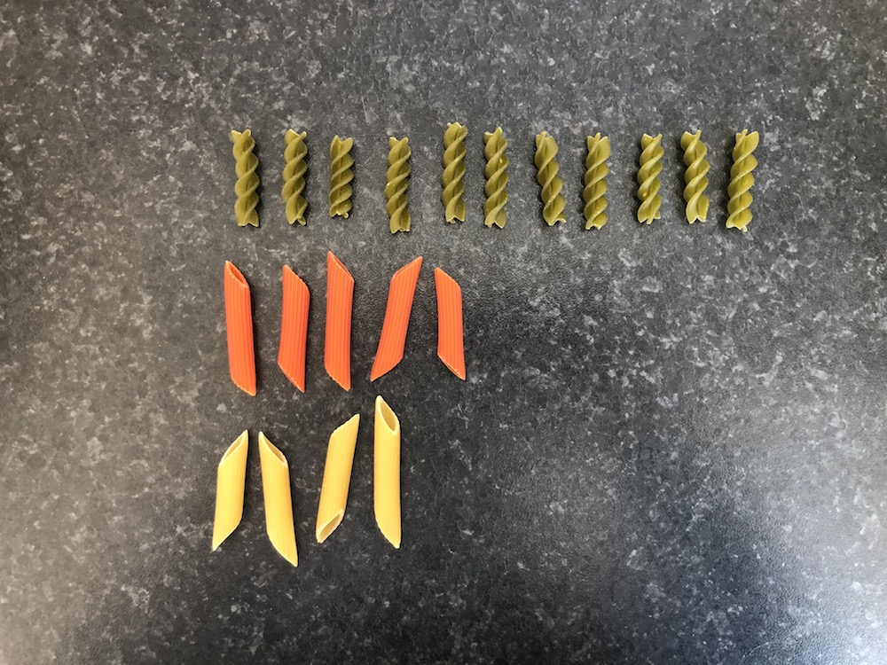 | 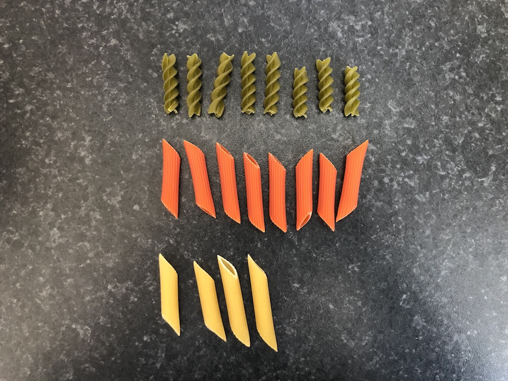 | 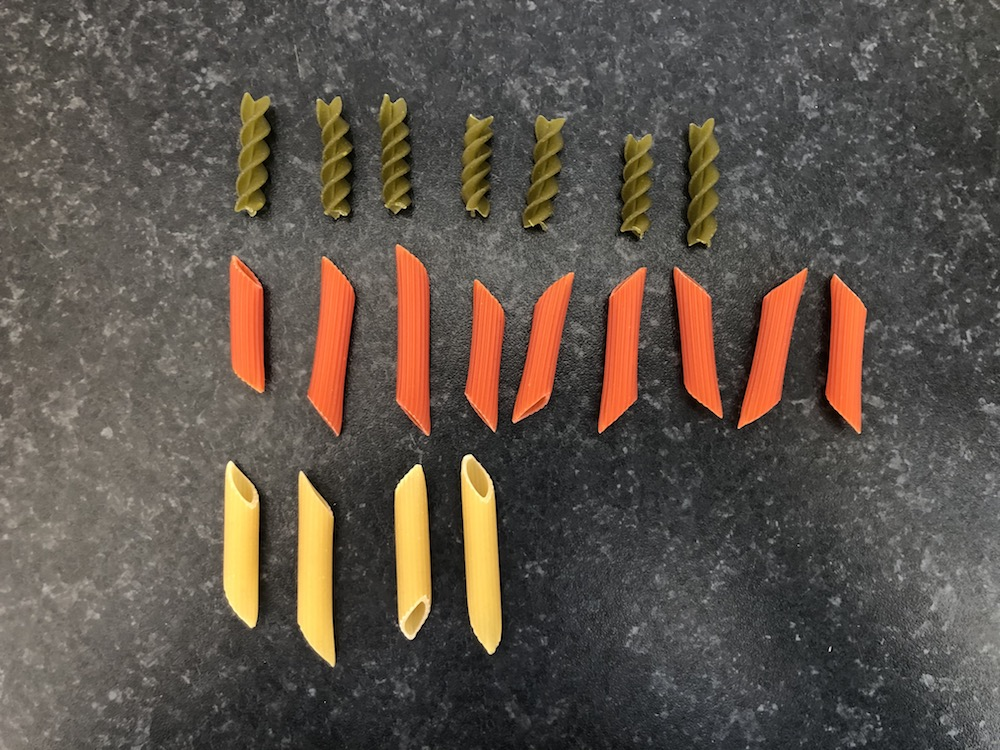 | 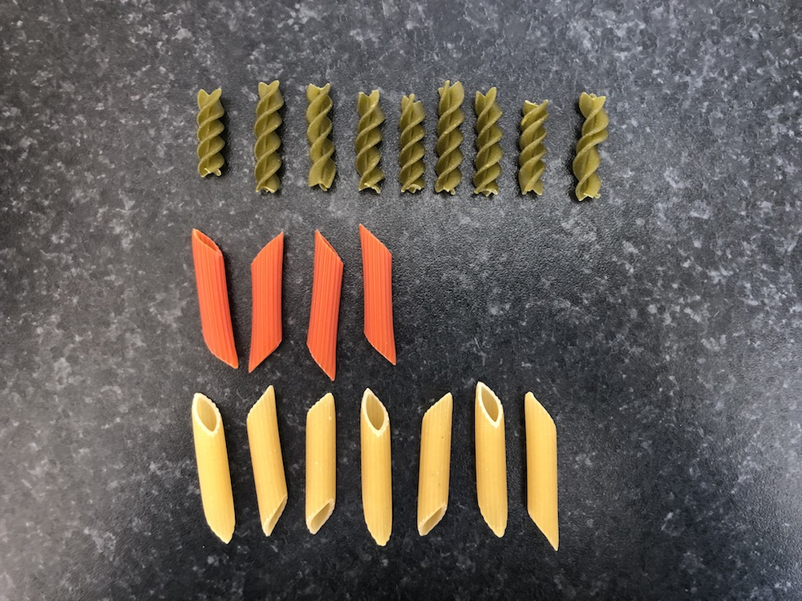 |
| 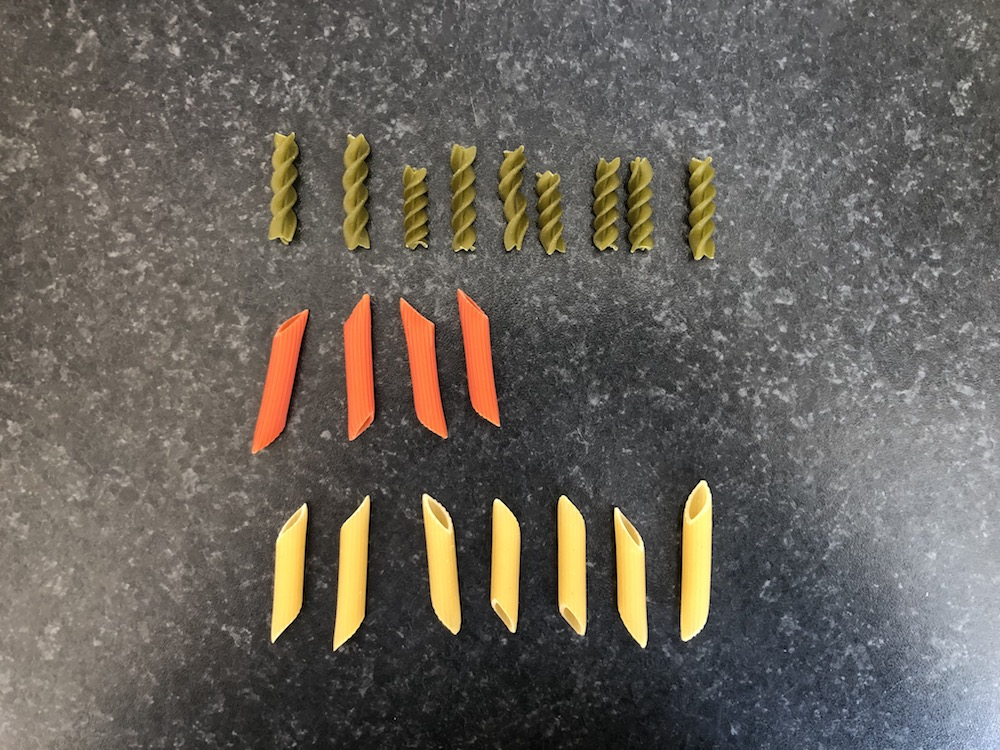 | 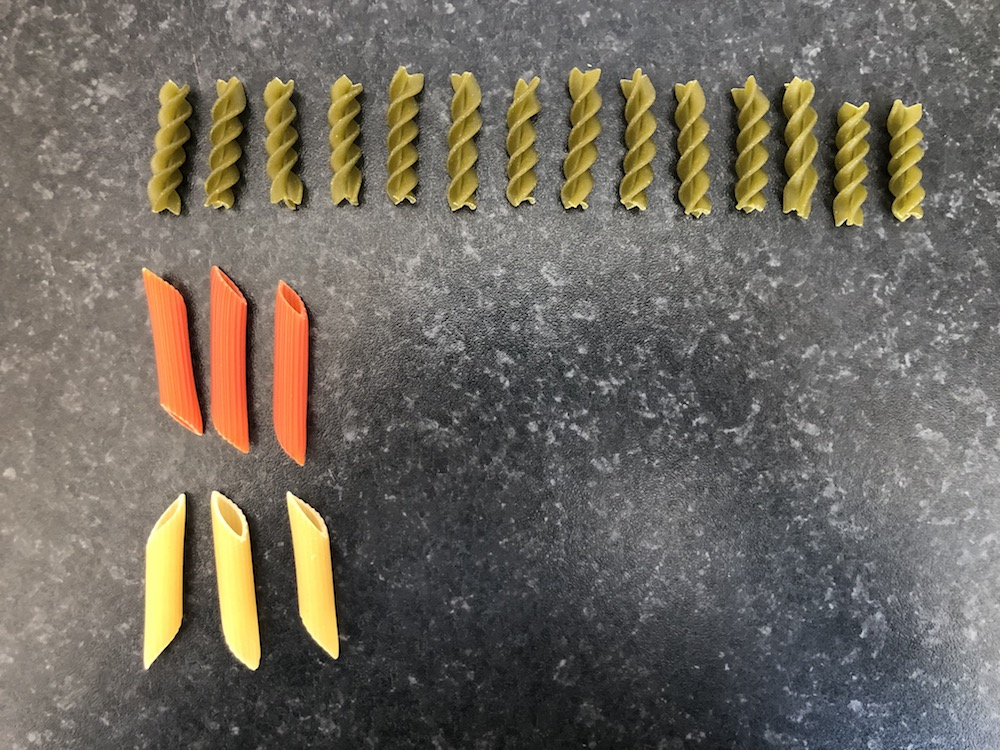 | 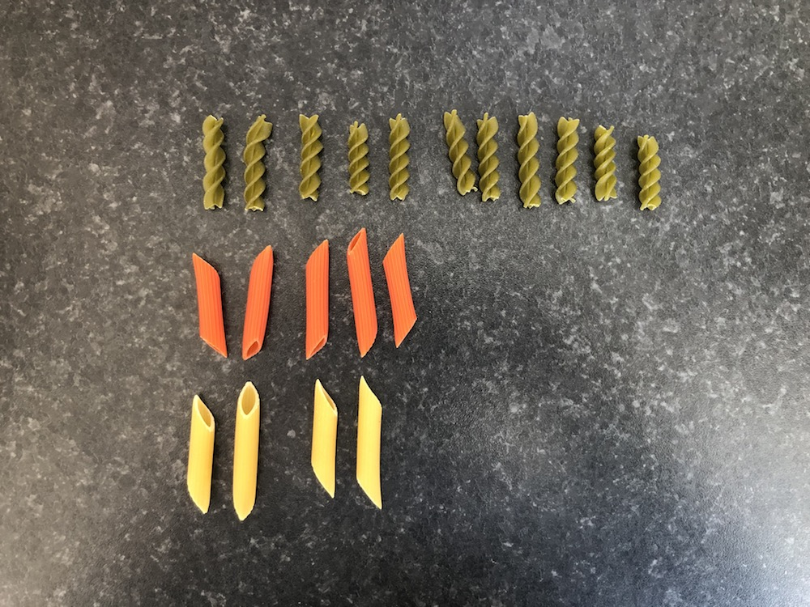 | 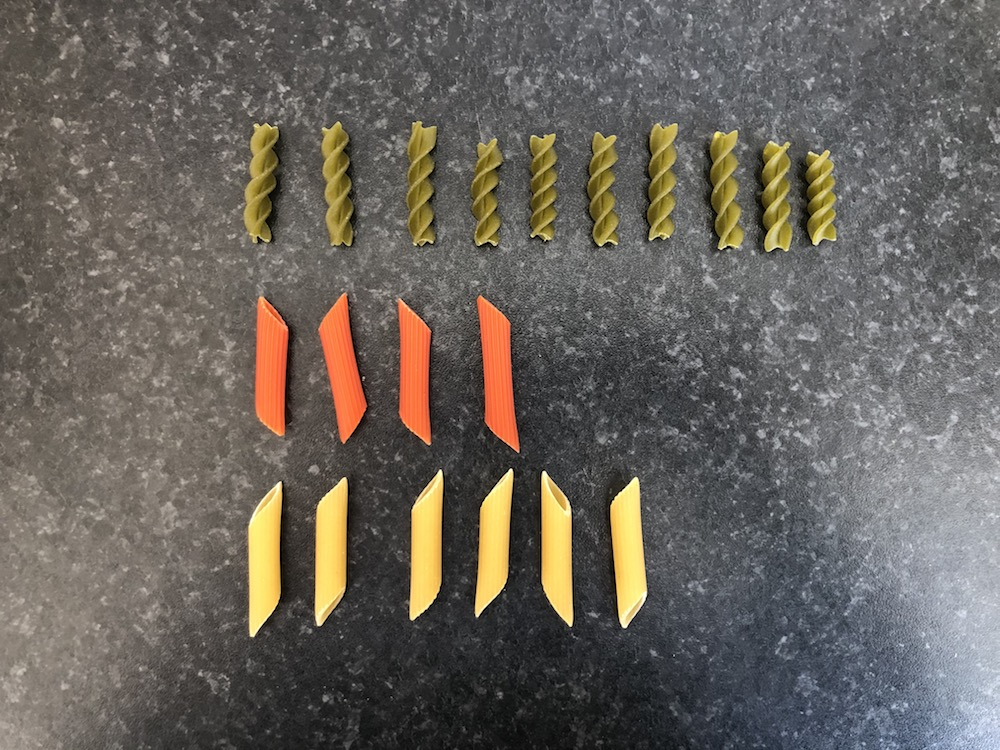 | 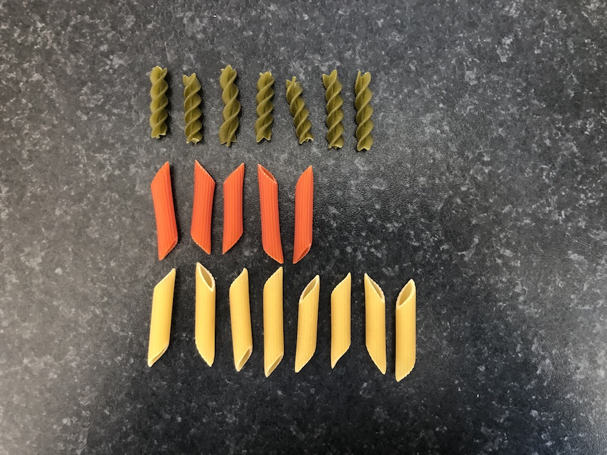 | 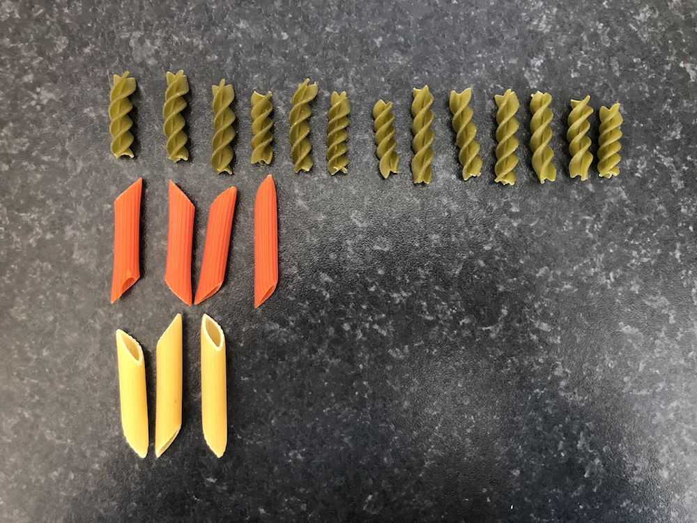 |
수업 중에는 실제 파스타를 준비할 수 없어서, 집에서 20개의 파스타를 복원 추출하여 18개의 표본을 뽑았음.
각각의 표본은 다음과 같음:
| 표본 번호 | 개수 | 비율 |
|---|---|---|
| 1 | 14 | 0.70 |
| 2 | 14 | 0.70 |
| 3 | 10 | 0.50 |
| 4 | 10 | 0.50 |
| 5 | 6 | 0.30 |
| 6 | 10 | 0.50 |
| 7 | 8 | 0.40 |
| 8 | 9 | 0.45 |
| 9 | 11 | 0.55 |
| 표본 번호 | 개수 | 비율 |
|---|---|---|
| 10 | 8 | 0.40 |
| 11 | 7 | 0.35 |
| 12 | 9 | 0.45 |
| 13 | 9 | 0.45 |
| 14 | 14 | 0.70 |
| 15 | 11 | 0.55 |
| 16 | 10 | 0.50 |
| 17 | 7 | 0.35 |
| 18 | 13 | 0.65 |
05:00 이전 슬라이드에서 녹색 파스타 비율을 포함하는 data.frame을 생성하시오. 이 데이터 프레임의 이름을 pasta로 지정하고, 비율을 포함하는 변수를 prop_green으로 설정하시오.
(힌트: data.frame() 함수를 사용하여 데이터 프레임을 생성할 수 있음.)
비율 값은 다음과 같음: (0.7, 0.7, 0.5, 0.5, 0.3, 0.5, 0.4, 0.45, 0.55, 0.4, 0.35, 0.45, 0.45, 0.7, 0.55, 0.5, 0.35, 0.65)
ggplot2를 사용하여 이 비율의 히스토그램을 생성하시오.
geom_histogram() 함수에서 다음 매개변수를 사용하시오:
boundary = 0.325, binwidth = 0.05.
무엇을 관찰할 수 있는가?
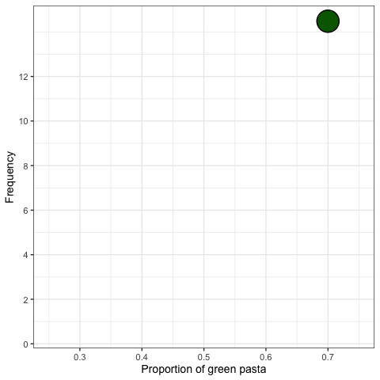
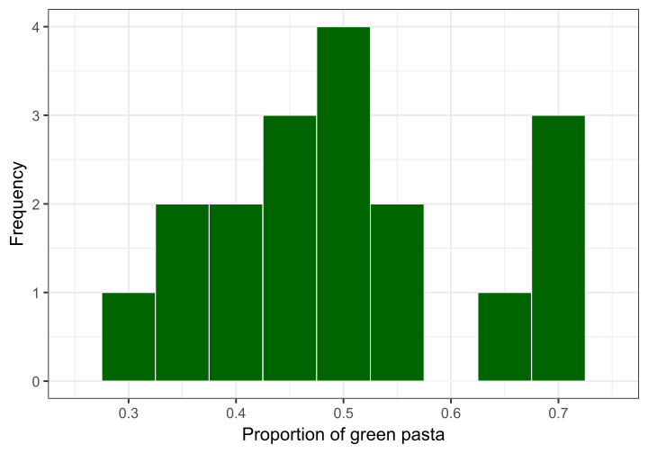
표본 추출이라는 통계 개념을 실험함.
목표: 녹색 파스타의 비율을 알고자 함.
방법:
전수 조사(Census): 시간이 많이 걸리고, 많은 경우 매우 비용이 많이 듦.
표본 추출(Sampling): 볼에서 20개의 파스타를 무작위로 뽑아 추정값을 얻음.
첫 번째 추정값은 0.70이었지만, 이는 대부분의 다른 추정값보다 높았음.
중요: 각 표본은 무작위로 추출됨 → 표본이 서로 다름! → 추출된 비율이 달라짐 → 표본 변동(Sampling Variation)
moderndive 패키지의 rep_sample_n 함수를 사용하여 크기 50의 첫 번째 표본을 추출할 것임.# A tibble: 1,650 × 3
# Groups: replicate [33]
replicate pasta_ID color
<int> <int> <chr>
1 1 495 yellow
2 1 534 green
3 1 297 yellow
4 1 208 green
5 1 131 green
6 1 569 red
7 1 522 yellow
8 1 248 green
9 1 365 red
10 1 665 yellow
# ℹ 1,640 more rowsvirtual_prop_green <- virtual_samples %>%
group_by(replicate) %>% # 각 표본별로 계산
summarize(
num_green = sum(color == "green"),
sample_n = n()) %>%
mutate(prop_green = num_green / sample_n)
virtual_prop_green# A tibble: 33 × 4
replicate num_green sample_n prop_green
<int> <int> <int> <dbl>
1 1 24 50 0.48
2 2 25 50 0.5
3 3 27 50 0.54
4 4 23 50 0.46
5 5 25 50 0.5
6 6 22 50 0.44
7 7 18 50 0.36
8 8 30 50 0.6
9 9 29 50 0.58
10 10 18 50 0.36
# ℹ 23 more rows실제 실험처럼 가상 샘플러도 무작위 표본을 생성함.
virtual_prop_green 데이터 프레임의 prop_green 열은 표본마다 값이 다름.
다시 말해, 표본 분포를 시각화할 수 있음:
ggplot(virtual_prop_green, aes(x = prop_green)) +
geom_histogram(binwidth = 0.02,
boundary = 0.51,
color = "white",
fill = "darkgreen") +
scale_y_continuous(breaks = seq(0, 12, by = 2)) +
labs(x = "Proportion of 50 pasta that were green",
y = "Frequency",
title = "Distribution of 33 samples of size 50") +
theme_bw(base_size = 20)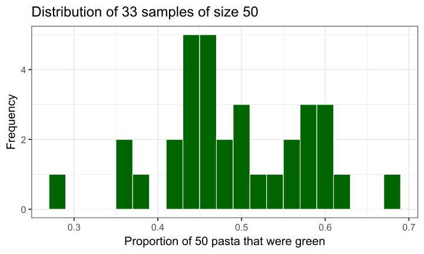
05:00 33개의 표본만 추출하는 대신, 이번에는 1000개를 추출해보자!
데이터를 불러와 pasta 객체에 저장하라.
moderndive 패키지의 rep_sample_n() 함수를 사용하여 크기 50인 표본을 1000개 생성하라.
각 표본에서 초록색 파스타의 비율을 계산하라.
각 표본에서 얻은 초록색 파스타 비율의 히스토그램을 그리시오.
무엇을 관찰할 수 있는가? 어떤 비율이 가장 자주 발생하는가? 33개의 표본을 사용할 때와 비교하여 히스토그램의 모양이 어떻게 달라지는가?
추출한 50개의 파스타 중 초록색 파스타가 20% 미만일 확률은 얼마나 되는가?
만약 표본 크기를 변경할 수 있고, 25, 50, 100 중에서 선택할 수 있다면?
여전히 목표가 그릇 속 초록색 파스타의 비율을 추정하는 것이라면, 어떤 크기의 삽을 선택하겠는가?
이전에 했던 작업을 다른 표본 크기에 대해서 반복해 보자.
각 표본 크기에 대해 1000개의 표본을 추출해 보자: \(n=25\), \(n=50\), \(n=100\).
rep_sample_n() 함수를 다시 사용한다.
표본 크기가 커질수록 표본 분포는 더 좁아진다.
즉, 표본 변동성에 의한 차이가 더 적어진다.
반복 횟수(여기서는 1000개)를 일정하게 유지하면, 더 큰 표본일수록 정규 분포에 더 가까워지고, 표준 편차가 더 작아진다.
표본 크기별 표준 편차 계산
| Sample Size | Standard Deviation |
|---|---|
| 25 | 0.10 |
| 50 | 0.07 |
| 100 | 0.05 |
표준 편차는 평균 주변의 분포의 확산 정도를 측정한다.
따라서 표본 크기가 증가하면, 전체 그린 파스타 비율에 대한 추정값이 더 정확해진다.
추정을 목적으로 표본을 추출함.
전체 그린 파스타의 비율을 추정하기 위해 표본을 추출함.
표본 추출과 관련된 핵심 개념
표본 변동성이 추정값에 미치는 영향: 서로 다른 표본은 서로 다른 추정값을 제공함.
표본 크기가 표본 변동성에 미치는 영향: 표본 크기가 커질수록 추정값이 실제 값에 가까워짐.
모집단 (Population) 우리가 관심 있는 개체 또는 관측치의 전체 집합. \(N = 713\)개의 파스타.
모집단 모수 (Population Parameter) 모집단에 대한 알려지지 않은 수치적 요약값으로, 우리가 알고자 하는 값. 예: 모집단 평균 \((\mu)\), 그린 파스타의 비율 \((p)\).
전수 조사 (Census) 모집단의 모든 \(N\)개의 개체나 관측치를 철저하게 조사하여 모집단 모수 값을 정확하게 계산하는 방법.
표본 추출 (Sampling) 모집단의 크기 \(N\)에서 크기 \(n\)인 표본을 수집하는 과정.
점 추정량 (Point Estimate) 또는 표본 통계량 (Sample Statistic) 모집단의 알려지지 않은 모수를 추정하기 위해 표본에서 계산한 요약 통계량. 예: 표본 비율 \((\hat{p})\)은 모집단 비율 \(p\)의 추정값을 나타내며, “hat(모자)” 기호로 표시됨.
대표 표본 추출 (Representative Sampling) 표본이 모집단을 잘 대표하는가?
편향된 표본 추출 (Biased Sampling) 모든 파스타가 동일한 확률로 표본에 포함될 기회를 가졌는가?
무작위 표본 추출 (Random Sampling) 편향 없이 무작위로 표본을 선택하는 방식.
우리는 계속해서 \(\hat{p}\)을 추정해 왔음.
표본 비율 \(\hat{p}\)의 표본 분포를 그려서 표본 변동성을 시각적으로 확인했음.
\(\hat{p}\)의 표본 분포의 표준 편차를 계산했음. 이 표준 편차는 특별한 이름을 가짐: 표준 오차 (Standard Error) 이는 점 추정량 \(\hat{p}\)의 일반적인 오차 크기를 나타냄.
아래 표는 요약된 결과를 정리한 것임:
| 표본 크기 \((n)\) | \(\hat{p}\)의 표준 오차 |
|---|---|
| 25 | 0.10 |
| 50 | 0.07 |
| 100 | 0.05 |
무작위 표본 (random samples)에서 얻은 점 추정량 (point estimates)은 모집단 모수 (population parameter)의 좋은 추측값을 제공함.
하지만 얼마나 좋은 추정값일까?
평균적으로 우리의 추정값은 정확할 것임.
그렇다면, 전체 \(N=713\)개의 파스타 중 녹색 파스타의 실제 모집단 비율 \(p\)는 얼마일까?
| 시나리오 | 모집단 모수 | 기호 | 점 추정량 | 표기법 |
|---|---|---|---|---|
| 1 | 모집단 비율 | \(p\) | 표본 비율 | \(\widehat{p}\) |
| 2 | 모집단 평균 | \(\mu\) | 표본 평균 | \(\overline{x}\) 또는 \(\widehat{\mu}\) |
| 3 | 모집단 비율 차이 | \(p_1 - p_2\) | 표본 비율 차이 | \(\widehat{p}_1 - \widehat{p}_2\) |
| 4 | 모집단 평균 차이 | \(\mu_1 - \mu_2\) | 표본 평균 차이 | \(\overline{x}_1 - \overline{x}_2\) |
| 5 | 모집단 회귀 계수 (기울기) | \(\beta_1\) | 표본 회귀 계수 (기울기) | \(b_1\) 또는 \(\widehat{\beta}_1\) |
| 6 | 모집단 회귀 절편 | \(\beta_0\) | 표본 회귀 절편 | \(b_0\) 또는 \(\widehat{\beta}_0\) |
표본 통계량이 수렴하여 특정한 중심 한계에 도달하는 것은 통계학에서 잘 알려진 사실임.
이는 유명한 중심극한정리(Central Limit Theorem) 때문임.
중심극한정리: 모집단 분포의 형태가 어떠하든 상관없이, 표본 평균이 큰 표본 크기를 기반으로 계산될 때, 이러한 표본 평균의 표본 분포는 점점 더 정규 분포 형태를 띠며, 동시에 점점 더 좁아짐.
✅ 데이터를 어떻게 다룰까?: 읽기(Read), 정리(Tidy), 시각화(Visualize)…
✅ 변수간 관계를 어떻게 요약할까? 단순 / 다중 선형 회귀…비선형회귀, 교차변수…
✅ 인과 관계(Causality)란 무엇인가?
✅ 전체 모집단을 관측하지 못하면 어떻게 할까? Sampling!
❌ 우리의 연구 결과가 단순한 무작위(Randomness) 때문일 수도 있을까?
❌ 실제로 외생성을 어떻게 찾아낼 수 있을까?
THE END!